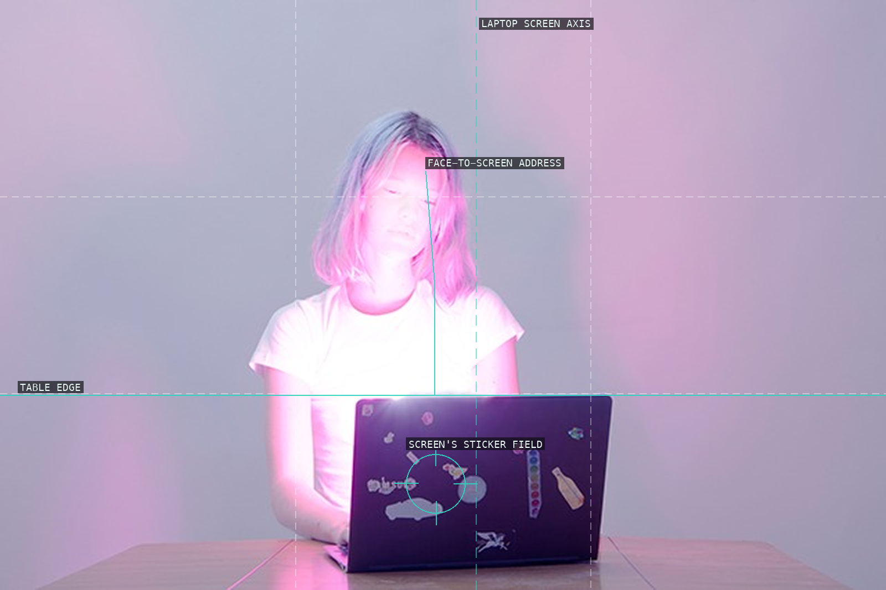
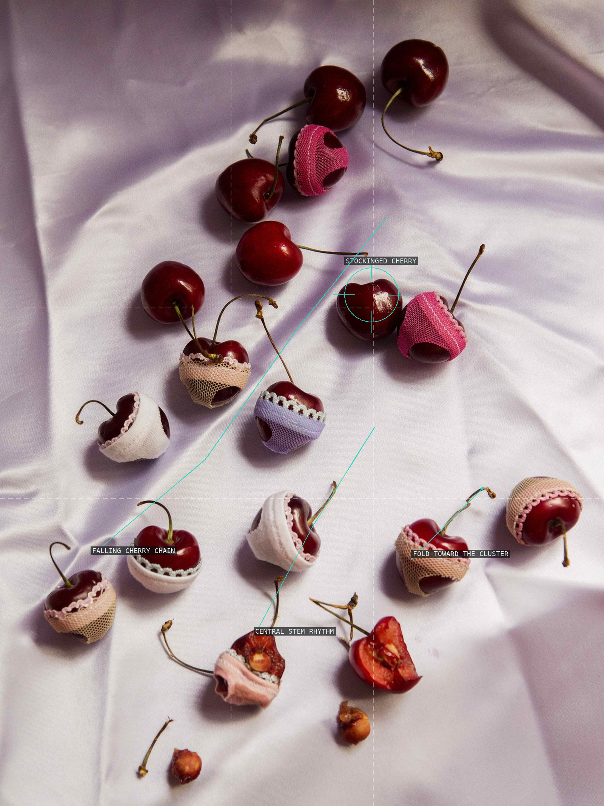
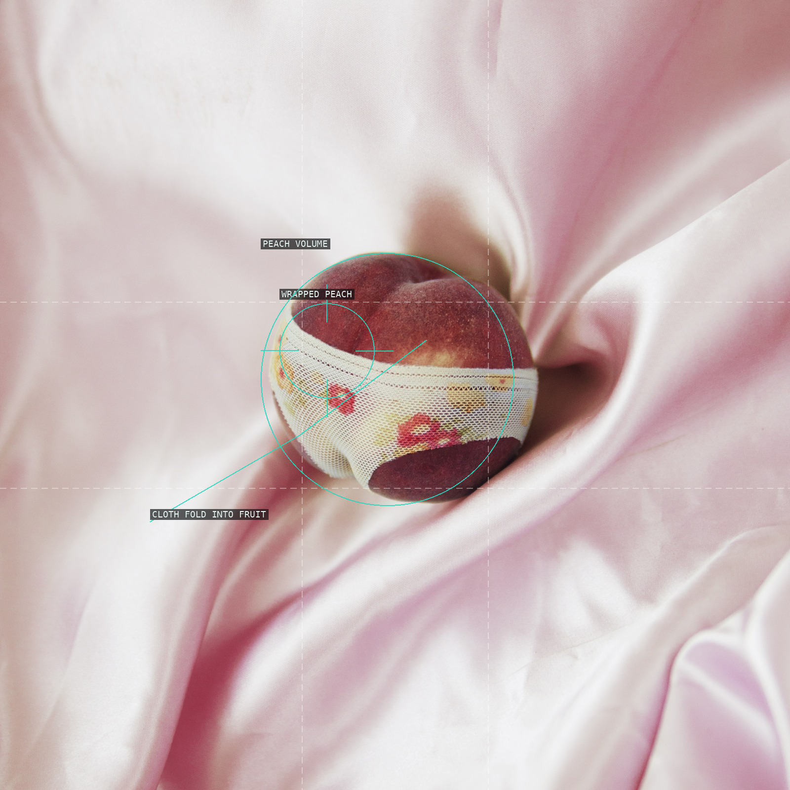
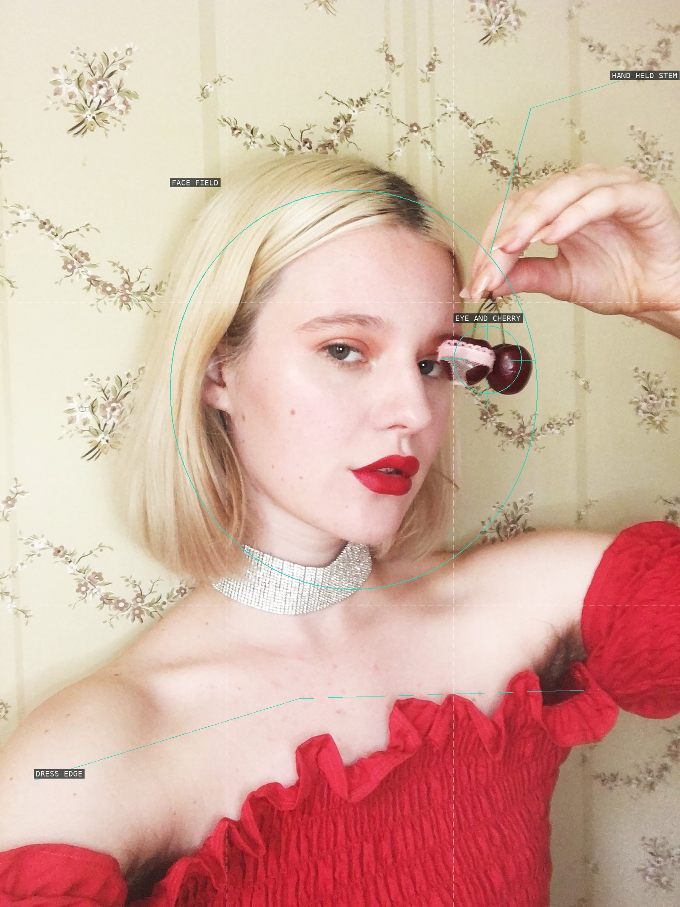
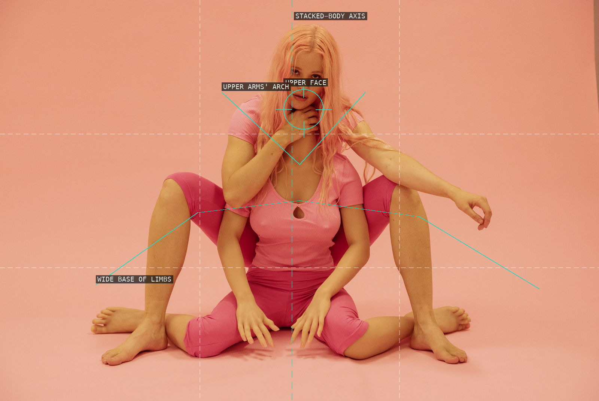
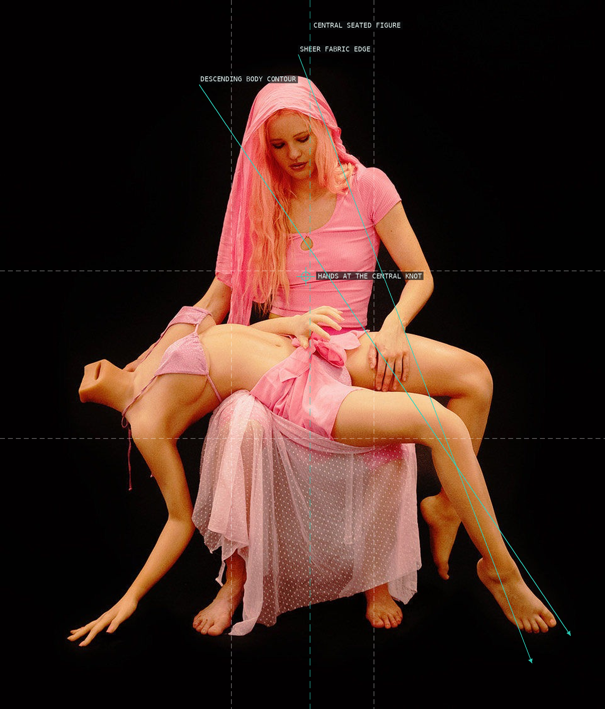
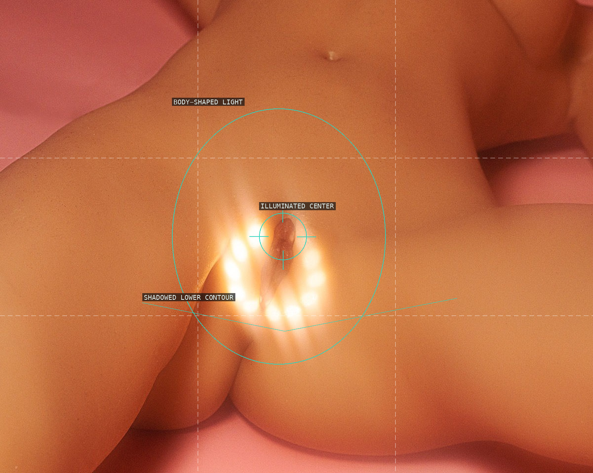
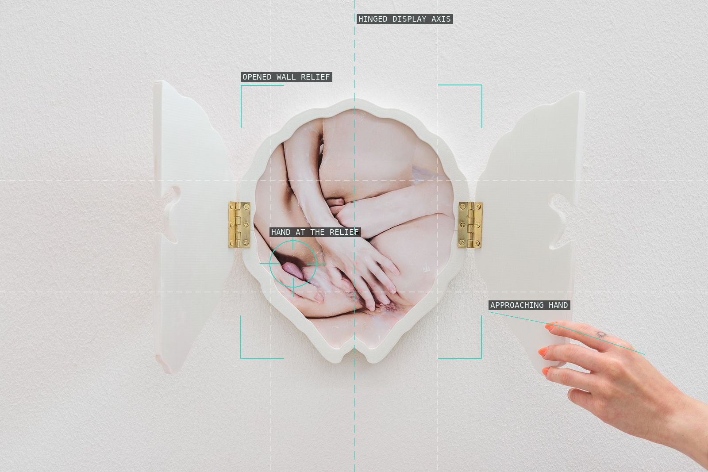
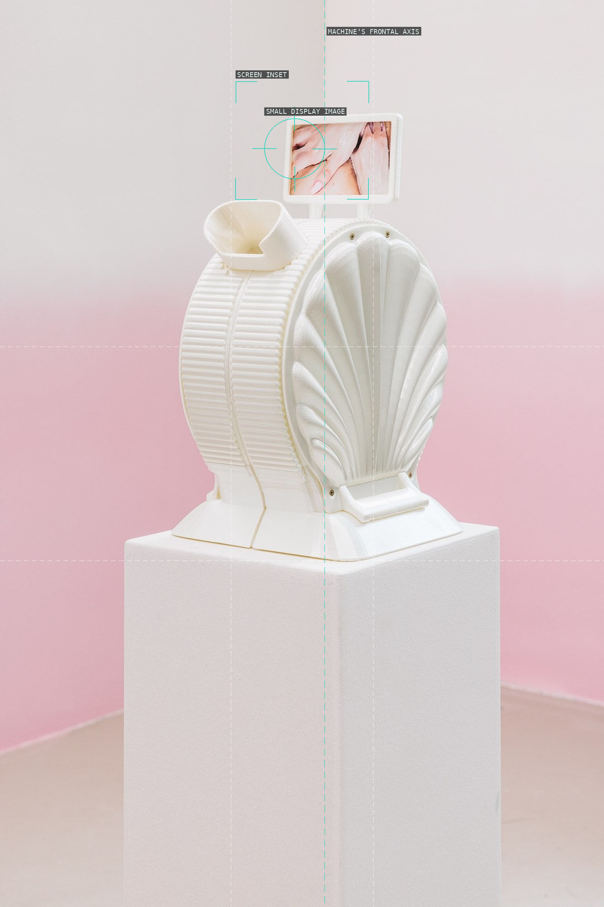
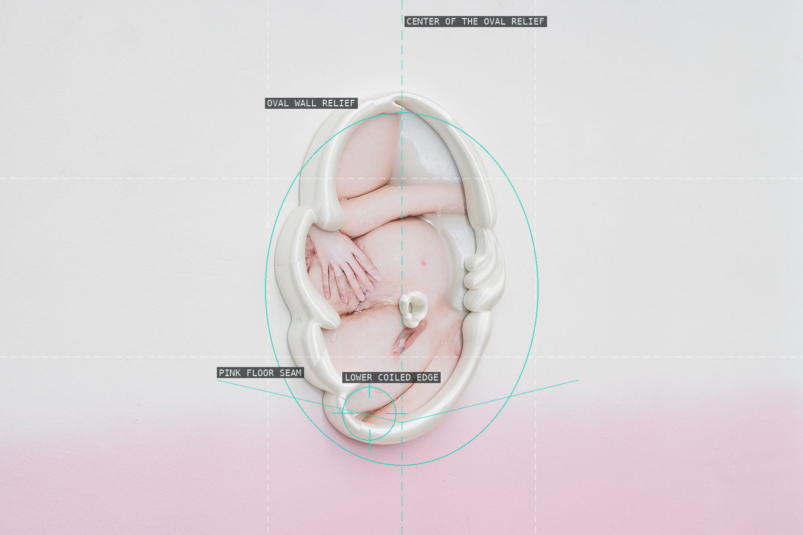

/* arvida-bystrom - proofs */
10 plates. Deterministic overlays rendered by the composition-analysis skill.

01-self-portrait-2013
A self-portrait is organized by the bright laptop, with the face suspended directly above it.

02-inflated-fiction-press-3
A falling chain of cherries turns a still life into a vertical, off-center rhythm.

03-inflated-fiction-press-2
A single wrapped fruit interrupts a large, softly folded pink field.

04-inflated-fiction-press-8
A cherry held over one eye turns the close smartphone crop into a graphic interruption.

05-coexist-2022
A near-symmetric body stack uses the floor and a tight central cluster to create a deliberately unstable icon.

06-pieta-2022
Crossing body contours converge at a central knot and float against black ground.

07-the-end-of-the-world-2022
A compact illuminated center emerges from a nearly edge-free field.

08-blushing-study-2025
An opened relief frames a bodily image while an outside hand keeps the display provisional.

09-crushing-2025
A centered white machine turns an intimate screen image into the smallest, highest note in a sparse room.

10-flushing-2025
A centered oval relief concentrates a tactile, bodily image in an almost empty white-and-pink room.